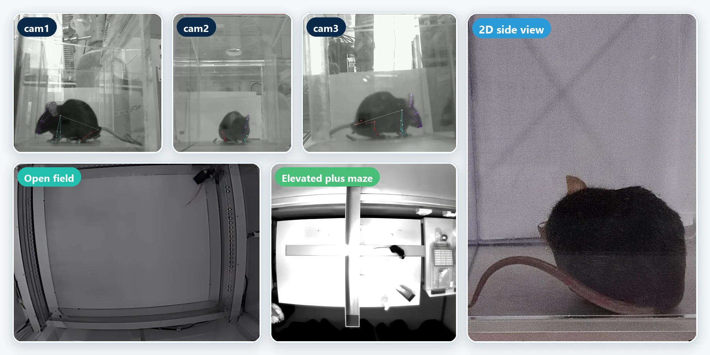
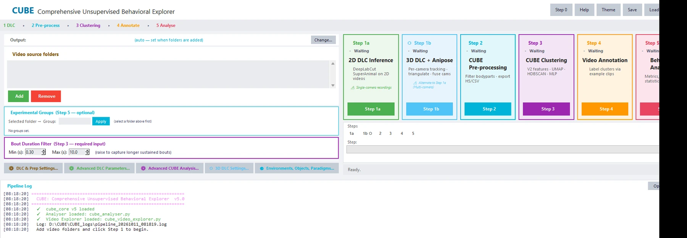
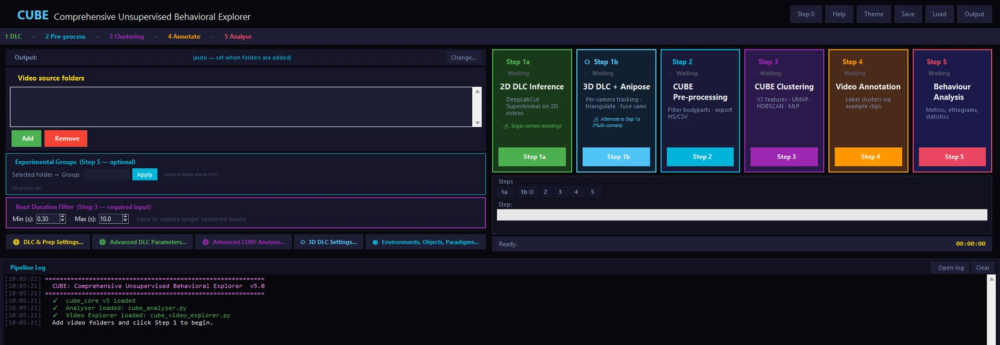
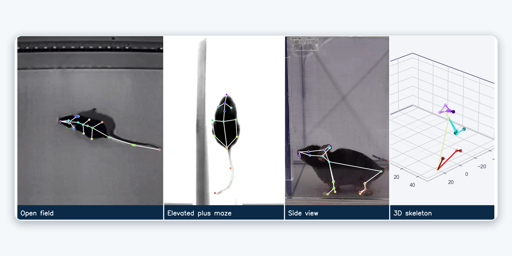
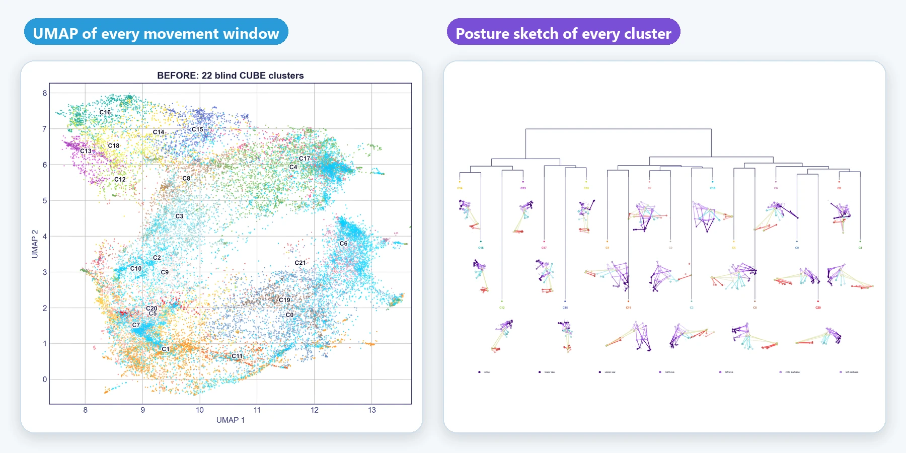
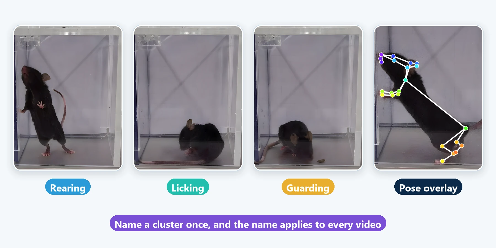
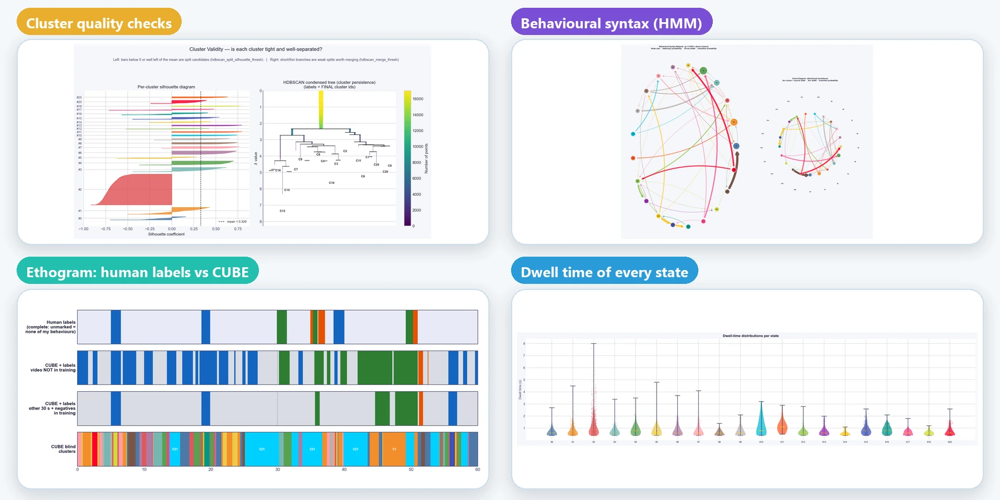
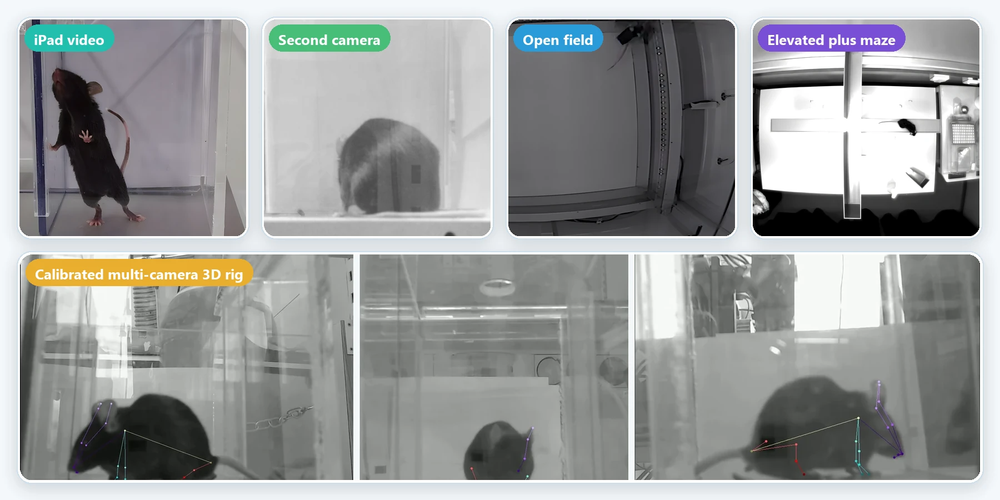
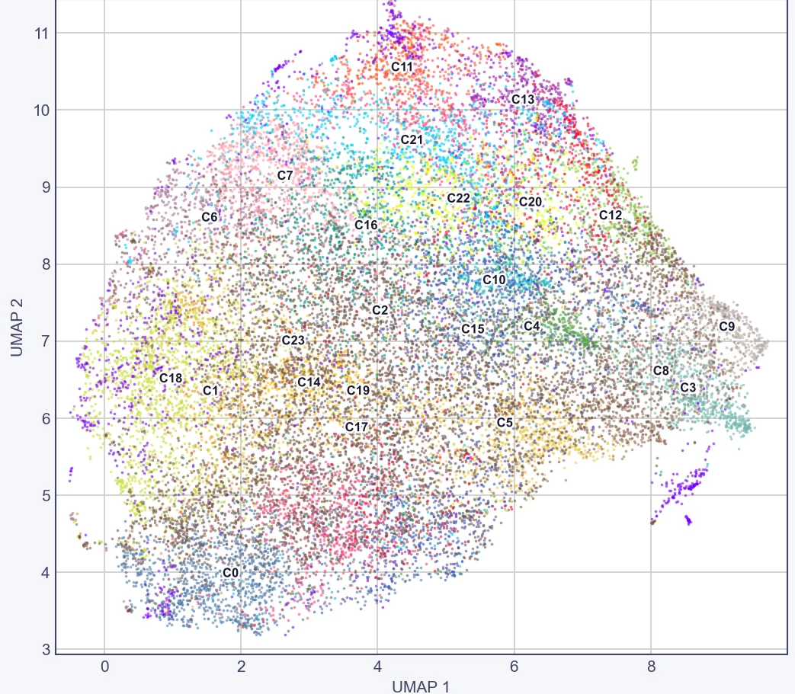
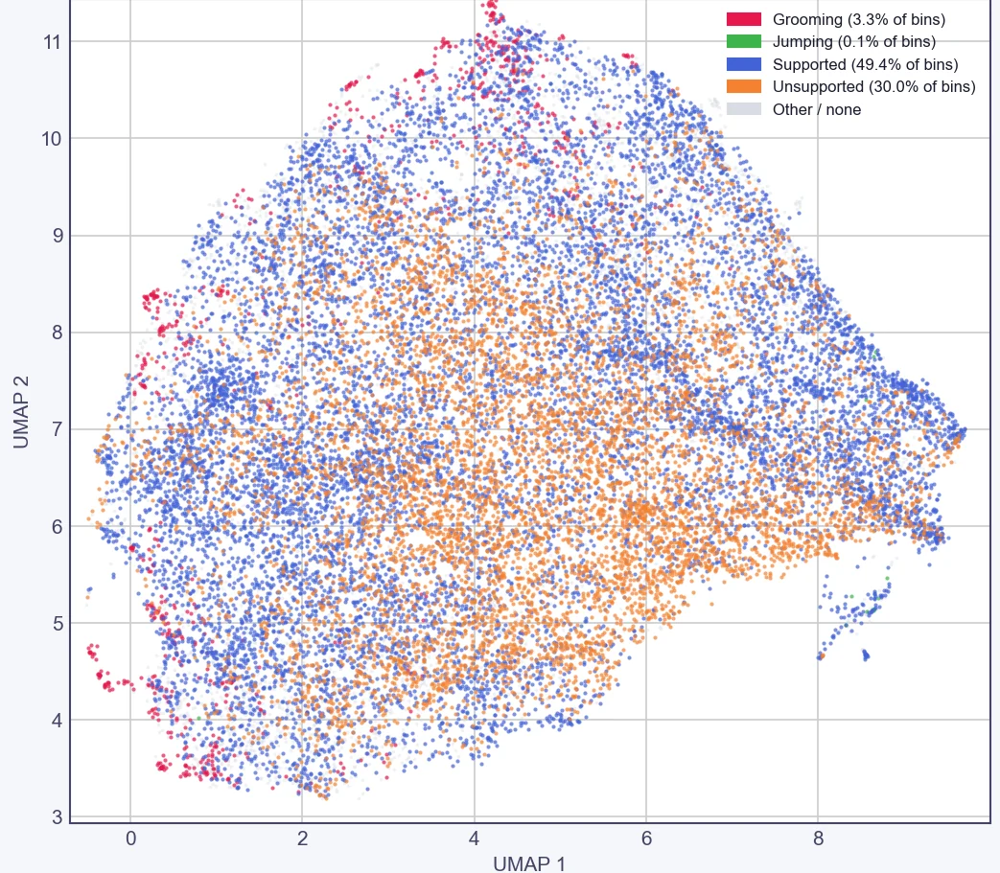

Record
Any camera, any rig. CUBE works with single-camera videos, dual cameras and synchronised multi-camera setups.
- Multi-camera recordings synchronised, with fill-frame detection
- Quality flags on every frame

Comprehensive Unsupervised Behavioral Explorer
CUBE finds and quantifies animal behaviour in video. It combines pose tracking, unsupervised clustering, annotation and statistics in one open-source app. Clusters are found without manual labels, and no programming is needed.


How it works
Scroll through the pipeline. Each step saves its progress, so you can stop and pick up where you left off.
Any camera, any rig. CUBE works with single-camera videos, dual cameras and synchronised multi-camera setups.

DeepLabCut finds the body points in every frame. With calibrated cameras, CUBE triangulates them into a 3D skeleton.

Posture and movement features are embedded with UMAP and grouped by HDBSCAN into clusters, then smoothed over time with a hidden Markov model.

Watch example clips of each cluster, give it a name once, and the name applies to every video.

Ethograms, behaviour sequences, bout statistics, transitions and group comparisons are built in, and figures and tables can be exported.

Flexible input
CUBE has been used with videos from several kinds of setups, from a tablet recording of a cage to classic mazes and calibrated multi-camera rigs.

Human in the loop
CUBE first finds clusters blind. When you name behaviours, it uses your labels to guide the clusters towards the behaviours you care about. Drag the handle to compare.


Blind clustersWith your labelsOpen field, top view, one shared UMAP. Left: 24 blind CUBE clusters. Middle: CUBE with guided labels, evaluated on held-out videos. Right: the human labels. Data: Sturman et al. (2020).
Why CUBE
Quality checks at each stage help you judge how far to rely on a result.
Confidence reports, frame-level quality flags, reprojection checks in 3D and seed-stability checks on clusters.
A hidden Markov model smooths the classifier output over time, which reduces frame-to-frame flicker.
Add your own labels to steer clusters towards the behaviours you define, and check the result on fully labelled videos.
Calibrated four-camera rigs are triangulated into a 3D skeleton. Uncalibrated rigs of up to three cameras fall back to a fused 2D view.
Trace regions and objects once to get paradigm metrics for open field, elevated plus maze, Y-maze, novel object and more.
Ethograms, bout statistics, transitions, group comparisons and a group predictor with permutation testing, with no code to write.
Quick start
CUBE runs on Windows 10 or 11 with Anaconda or Miniconda. A CUDA GPU is recommended for pose tracking and optional for analysis.
# get the code and create the environment
git clone https://github.com/param-valiathan/CUBE.git
cd CUBE
conda env create -f environment.yml
conda activate CUBE
# launch the app
python cube.pyDocumentation
Every step explained, with settings, outputs and troubleshooting.
Read the guide →Statistics, reclustering, transitions and group comparisons.
Open the reference →Use your own labels to steer clusters, and validate them.
See the method →Open field, EPM, Y-maze, novel object and more.
Browse paradigms →Calibration, triangulation and the fallback for uncalibrated rigs.
Set up 3D →Real outputs from open field and elevated plus maze analyses.
View the gallery →About the developer
CUBE was developed by Param Valiathan in the laboratory of Patrik Ernfors at Karolinska Institutet (research group website). Questions, bug reports and suggestions are welcome: open an issue on GitHub or get in touch on LinkedIn.